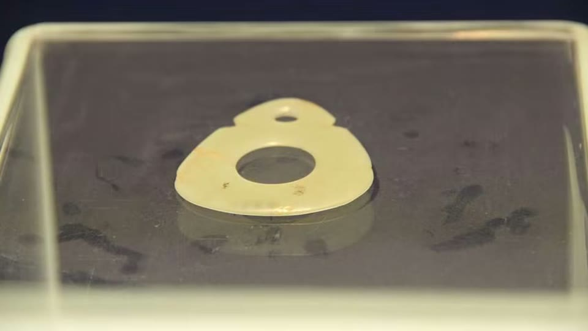
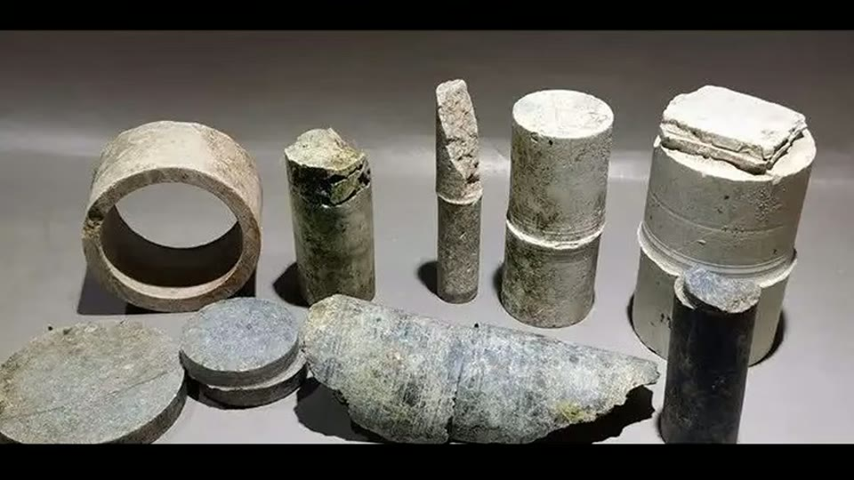
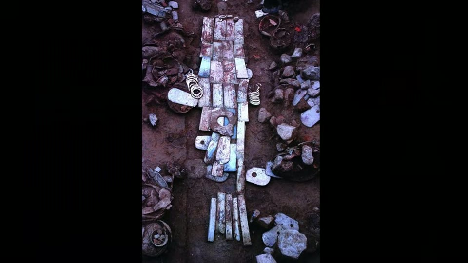
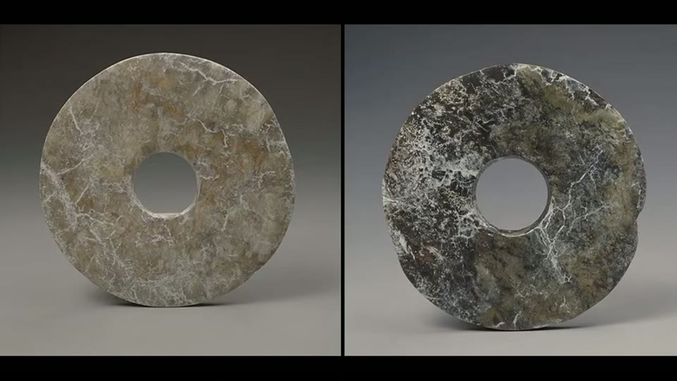
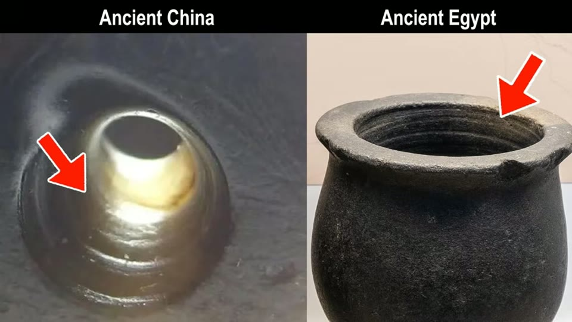
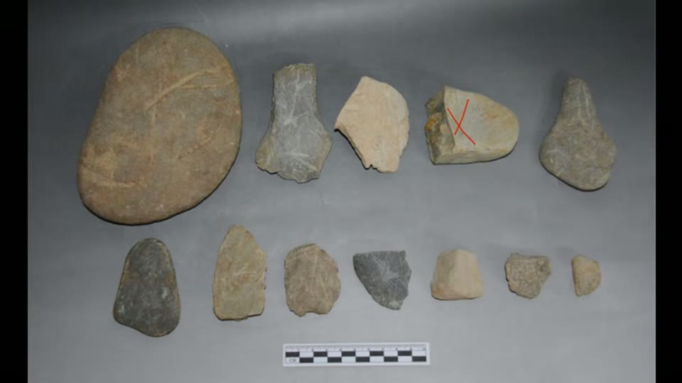
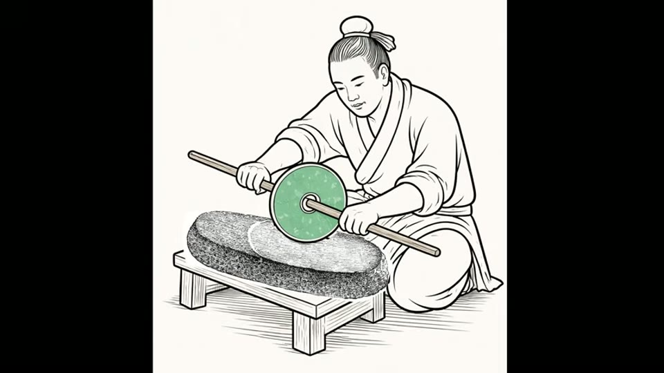

Curious Being
China's Impossible Jade Discs: A Neolithic Engineering Mystery
Tina · 26 min · watch on YouTube · summarised 2026-08-23
The claim under examination is that the jade bi discs of the Neolithic Liangzhu culture are out-of-place artifacts: too hard a material, too precise, too perfectly circular for a culture with no metal tools.
Her opening move is to ask who is making the claim 01:40–02:10. The Chinese archaeological community does not say this. Nor do the specialists who excavated the jade workshops and have spent decades handling both finished and unfinished pieces from them. She asks a question that the rest of the video answers: did the claim come from anyone who physically measured a disc, and if so, how many?
The material, stated correctly
Liangzhu dates to 3300–2300 BC 00:44–00:52. A bi is a flat circular disc with a central hole, usually nephrite — Mohs 6 to 6½, comparable to granite 00:57–01:20. Jadeite is harder at 6½ to 7 and was rarely used in Neolithic China. Nephrite is the softer of the two but its interlocking fibrous structure makes it significantly tougher than granite, which is why it suited tools, weapons and fine carving.
She also notes that in ancient China the word for jade meant beautiful stone and was not restricted to nephrite or jadeite 04:10–04:30: some Liangzhu elite pieces are serpentine, and some Neolithic jade objects are quartz or harder.
The form has a four-thousand-year run-up
The backbone of the argument is that the bi disc did not appear from nowhere 04:30–09:00.
- Xiaonanshan, northeast China, the earliest known jade culture at over 9,000 years old — predating Liangzhu by four millennia. Nephrite rings and beads, and some pieces with cone-shaped drill holes, indicating flint-tipped drills.
- Xinglongwa, 8,000 years ago. Translucent nephrite polished to a high lustre. Its slit-cut jade rings turn up in pairs beside the ears of skulls in burials, so they are read as ear ornaments.
- Hongshan, 4700–2900 BC. Dragons, birds, plaques, thin-walled hoop tubes, and discs with central holes at 5–15 cm across, smaller than Liangzhu's. Some are around 3 mm thick at the edge, with a subtly domed cross-section rather than a flat-cut slice — she suggests the thinning was for lightness and for the way a thin edge catches light. Hongshan discs are sometimes noticeably off-circular, and some are squarish with rounded corners.
- Lingjiatan, 3800–3300 BC, sitting between Hongshan and Liangzhu.

Hongshan jades were worked thin - around 3 mm at the edge - a thousand years before Liangzhu, which is why the disc form does not appear from nowhere.
What the tool marks are
This is the evidence section, and all of it is marks left on objects.
Drill marks survive polishing 08:00–08:40. On a Hongshan piece in the Bairin Youqi museum in Inner Mongolia, horizontal lines cut by the drill are still clear in the centre after finishing, because polishing tools cannot reach into small holes. The same circular or spiral marks and tight concentric lines appear on Hongshan plaques and axes.
Biconical holes 08:40–09:10. Thicker pieces were drilled from both sides, and the two bores rarely meet exactly — leaving a misaligned step or ridge at the centre, and drilled-out cores consisting of two cones joined base to base. Liangzhu and Lingjiatan both did this.

The cores drilled out of jade are the direct by-product of the method, and they carry the striations and the taper that the method predicts.
String sawing 09:40–10:20. Curved, shallow, concave cut marks on jade axes and some Liangzhu discs. The cord was never the cutting tool — it was a carrier for abrasive. Because sawing was slow, the artisan could monitor and correct angle, alignment and progress as they went.
Rigid sawing 17:30–17:55. A stone saw or wooden blade, leaving straight parallel cut marks, used to shape the outer edges of small objects with a series of straight cuts.
And the abrasive is the whole answer 10:20–10:50. Ancient Chinese lapidary used jade-cutting sand: water mixed with quartz, garnet or corundum — all harder than nephrite on the Mohs scale. A tool softer than the workpiece cuts because it carries something harder.
The evidence that is in the language
An unusual line of support, and one of the better things in the video 10:50–12:20. The technique is preserved in Chinese idiom:
- Stones from other mountains can be used to cut jade — originally a literal reference to jade-cutting sand and stone tools, now meaning that others' advice helps one improve.
- Jade cannot be made into a useful object without being carved.
- The four verbs qiē cuò zhuó mó — cutting, grinding, carving, polishing — name the technical stages of jade working, and survive as an idiom for refining ideas or character.
The process was routine enough, for long enough, to leave fossils in the vocabulary.
Liangzhu's discs, and why there are so many
Liangzhu bi are much larger than their predecessors: 10–25 cm across, the largest over 30 cm, with central holes of 3–7 cm 12:20–13:00. They are too big and heavy to wear, and are found in quantity in elite tombs, covering bodies from head to foot.
The standard reading is that they symbolise the heavens and the cosmos and, paired with cong tubes, ease passage to the afterlife. She proposes a different one 13:00–15:00: the earlier Lingjiatan culture had the same body-covering custom but used large jade axes or rectangular slabs, which suggests the point was to cover the body with large pieces of jade, and that the disc shape was incidental. She traces the belief that jade preserves the body from decay forward through Bronze Age jade face masks to the full jade burial suits of the Western Han around 200 BC.
One documented detail supports her 14:30–15:00: the discs covering bodies are recorded by archaeologists as low-grade nephrite of inferior quality — burial jade, produced quickly to shield a corpse, quite distinct from the finely carved ritual pieces in good material placed near the head, stomach and chest.

The body-covering custom she traces back before Liangzhu, where the covering was made of large plain jade slabs rather than discs.
The direct answer to the claim
The core rebuttal is short 15:20–17:30. Museums and archaeologists who examine the discs record that they are not perfectly circular. Despite polishing, surfaces retain unevenness and small grinding lines. Discs displayed with only one face exposed may keep string-saw marks on the hidden side. And the central holes frequently show drill evidence — concentric lines from tube drilling, or a sliver of extra material left where the drilling finished.


The claim is that the discs are perfectly circular. The excavation and museum record says they are not, and that manufacturing traces survive on them.
The tubular bits themselves were bamboo, reed and hollow bone in different diameters, carrying abrasive slurry 18:00–18:30. Modern experiments with string saws and bamboo drill bits have reproduced the same marks on jade, which is the part that turns a plausible account into a tested one 18:30–18:45.
The Egyptian comparison, used the other way round
She then puts Chinese and Egyptian drill cores side by side 18:45–20:30 — and the point of the comparison is the opposite of the usual one.
Both show visible concentric striations. Both cores are slightly tapered, narrower at the bottom, which she attributes to mechanical wobble, wear on the tool and the behaviour of the abrasive slurry as drilling becomes less efficient with depth. The straight rigid-saw marks on Chinese jade fragments likewise resemble those on Egyptian stone: straight, parallel, shallow.

The same drilling traces in China and Egypt - used here to argue for a shared mundane technique rather than a shared lost technology.
The difference is the tube. Neolithic China had no metal, so bamboo; Egypt may have used copper. Same marks, different tube, same abrasive doing the work.
She extends the line back much further 20:30–22:30. At Denisova Cave in Siberia, occupied by Denisovans and Neanderthals, the world's earliest drilled stone bracelet was found — a chlorite bracelet whose 8 mm hole shows precision and symmetry that researchers attribute to a high-speed rotary tool, a bow or pump drill running at several hundred to over a thousand RPM, with specific microscopic wear patterns to match. Those tight concentric lines resemble both the Chinese jade marks and the marks on predynastic Egyptian vases and mace heads.

Rotary drilling of hard stone with a bow or pump drill runs back to the Palaeolithic, long before any of the jade cultures.
The workshops
The strongest physical evidence is not the discs at all 22:30–24:00. Multiple sites have been identified as stone and jade production workshops, yielding flakes, fragments, cores, raw material, and finished and semi-finished products together. At Xishanqiao, a Liangzhu site: stone hammers, anvils, axes, knives, drill bits, rollers, pestles and grinding stones — with grinding tools reportedly the most numerous of all.

The strongest evidence is not the finished discs but the workshop debris excavated with them - grinding stones outnumbering everything else.
The reconstructed sequence 24:00–25:00: string-saw blocks from a boulder; drill the central hole with a tubular drill and abrasive, from both sides if the piece is thick; cut the corners and any relief; polish with hides, rubbing stones and finer abrasives. Offcuts became smaller objects.
For the discs specifically she suggests a square slab was cut, the hole drilled, guidelines drawn on both faces, the corners sawn off, and the outer circle then trued by one of several methods — a bigger tube drill for small rings; for large discs, a stick through the central hole used as an axle to roll the edge against a grinding slab; or the disc mounted on a stick and spun with a rope while a second worker held a grinding stone against it; or mounted on a pump or bow drill used not to drill but to rotate the disc at speed. Some researchers suggest a lathe.

One of several ways the outer circle could have been trued - and the video offers these as possibilities rather than as findings.
Her conclusion is flat 25:00–25:40: the discs are not out-of-place artifacts. They are not perfectly circular, not perfectly flat, and not free of abrasion marks. They are the product of an extremely laborious process, and they carry its imperfections.
What you can check yourself
- Whether Liangzhu bi discs are perfectly circular is a measurement, and museum and excavation records already report the answer. This is the one thing the claim depends on.
- The sliver of material left at the end of a drilled hole, and concentric tube-drilling lines inside the central holes, are visible on the objects themselves.
- Nephrite's hardness at Mohs 6–6½ and its fibrous toughness are standard mineralogy, as is the fact that quartz, garnet and corundum are harder.
- The workshop assemblages — Xishanqiao and others — are excavated, catalogued and published, including the unfinished pieces and the cores.
- The replication experiments with string saws and bamboo drills are published work and can be repeated; string sawing with sand and water is something anyone can try.
- The taper on drill cores, Chinese and Egyptian alike, is measurable from any published core.
- The Chinese idioms are in every dictionary, and their literal derivation from jade working is not disputed.
- The Denisova bracelet's 8 mm hole and the wear analysis behind the rotary-tool inference are published.
What the video does not settle
- The replication experiments are cited, not sourced. "Modern experiments have created similar tool marks" is the load-bearing sentence of the whole argument and it arrives without a reference, a researcher or a date.
- How the outer circle was actually trued is unresolved, and she says so — four or five methods are offered as possibilities and none is identified from wear evidence on a specific disc. This is the real remaining gap, and it is the part the original claim was about.
- Her burial-custom reinterpretation is an argument from analogy. That Lingjiatan covered bodies with axes and slabs shows the covering habit predates the disc, not that the disc carried no meaning of its own, and no evidence for the preservation belief is offered from the Liangzhu period itself.
- "Not perfectly circular" is reported, not measured here. The video cites museum and archaeological records rather than presenting tolerances, so the rebuttal answers an unmeasured claim with an unquantified one.
- The age given for the Denisova bracelet does not match the paper on screen — 50,000 years in the narration against about 30,000 in the abstract she is displaying. Nothing in the argument depends on the difference, but the figure should not be repeated from this video.
- The Denisova section proves antiquity of rotary drilling, not continuity. Nothing connects a 50,000-year-old Siberian bracelet to Neolithic China except the resemblance of the marks, and the video does not claim a lineage — but it does place them in one sequence.
- The Egyptian comparison is visual. Concentric striations and tapered cores are consistent with rotary tube drilling and abrasive, which is the point, but no measurement of striation pitch or taper angle is made on either side.
- Nothing here addresses the vases claim on its own terms — the comparison establishes shared technique on cores and saw marks, not the micron-level circularity that the Egyptian argument turns on.
See also
What They are Not Telling You About Precise Egyptian Stone Vases? — the same tool marks, and the same question asked of a much more famous claim.
Lost Prehistoric Engineering: The Mystery of the 0.5mm Jade Artifact — the Lingjiatan bow drill, and an object that looks less possible than these discs.
What we have not checked
- Site and culture names are as spoken and reconstructed from context. Confirmed spellings used here: Liangzhu, Hongshan, Lingjiatan, Xinglongwa, Xiaonanshan, Xishanqiao. The museum rendered by the captions as "Ba'er Ling You Qi" is almost certainly Bairin Youqi (Baarin Right Banner) in Inner Mongolia, but the name is inferred, not heard.
- The four jade-working verbs are given in the captions as "qiē cuò zhuó mó" and are transcribed here as spoken. The characters have not been confirmed.
- The dates — Xiaonanshan over 9,000 years, Xinglongwa 8,000, Hongshan 4700–2900 BC, Lingjiatan 3800–3300 BC, Liangzhu 3300–2300 BC — are as she gives them and have not been traced.
- The replication experiments with string saws and bamboo drills are not attributed to anyone in the video.
- The Denisova study is identified on screen and the narration disagrees with it. The paper she displays is A Paleolithic Bracelet from Denisova Cave by A.P. Derevianko, M.V. Shunkov and P.V. Volkov of the Institute of Archaeology and Ethnography, Siberian Branch of the Russian Academy of Sciences. Its abstract, visible in the frame, puts the estimated age of the associated deposits at about 30,000 years; the narration says the bracelet is over 50,000 years old. The paper also describes a fragment of a chloritolite bracelet, not a complete one. The several-hundred-to-1,000 RPM figure is hers and does not appear in the visible abstract.
- The narration renders nephrite hardness as "6 to 6 and 1/2" and states nephrite is tougher than granite while softer than jadeite. Both statements are standard, but no source is given for the toughness comparison.